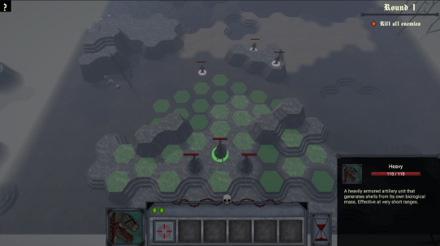
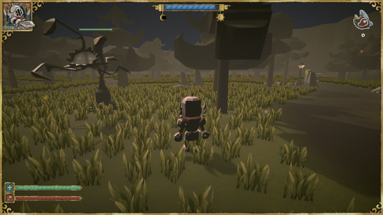
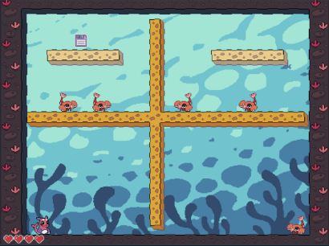

A prototype turn-based strategy game where you control mutated human weapons on their road to destroy their creators.
Hanna Repo
Hi, I'm Hanna Repo. I'm a game programmer and I enjoy making enemy and NPC behaviours and gameplay logic. I like learning new systems and programming patterns and honing my existing skills.
Bellum Corpus

Feast Or Famine
A third person resource gathering game with melee combat, light survival elements and fishing.

Memo Bubble
2D platformer with early 2000's aesthetics heavily inspired by the classic Bubble Bobble.

The Green City
Small scale 2D city building game for mobile where you need to balance your finances and the city's pollution level.